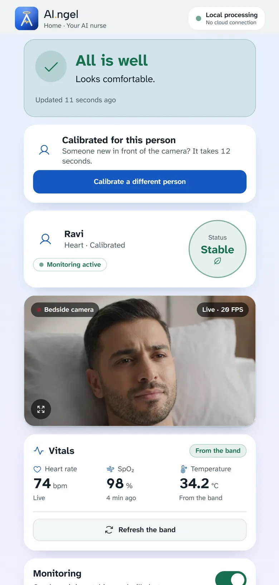
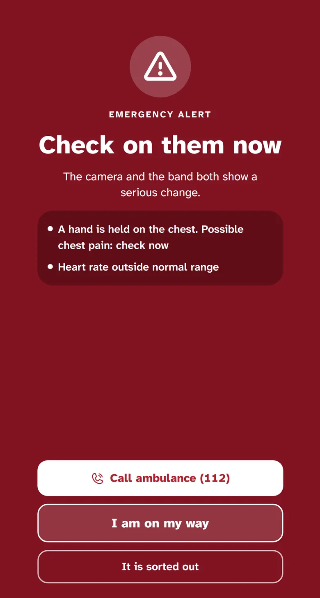

Notices pain signs
A hand held on the chest, or unusual movement, is picked up and checked against the vitals before anyone is alarmed.
An AI-based patient monitoring and alert eco-system for home and ward care, working 24/7.
AI.ngel watches over a patient or an elder and tells the concerned person only what matters. It is a prototype and not a diagnostic tool.
It reads unusual movement and signs of pain, such as a hand held on the chest. Video and faces never leave the AI computer.
The wrist band, the drip line sensor and the urine bag sensor send their readings to the AI computer, all on your own Wi-Fi.
It processes every input together, the camera and the sensors, and gives out alerts to suit the situation. It runs at the bedside, with no cloud processing.
Movement alone sends only a gentle alert. The alarm sounds when the camera sees something unusual and the vitals change too.
Tap through a night with AI.ngel. This is a prototype of the real iPhone and Android app, running on demo footage and demo vitals.


Demo footage is an AI-generated stand-in. Nothing here is a real patient.
A hand held on the chest, or unusual movement, is picked up and checked against the vitals before anyone is alarmed.
Thumbs up for water. Open palm for help. Two fingers for the bathroom.
Day, night, and the quiet hours between.
Live camera and alerts on iPhone and Android. One tap calls the ambulance or informs the doctor. The app never dials by itself.
Video and faces stay on the AI computer. It works on your own Wi-Fi, with no cloud processing.
Day-to-month reports, in PDF or CSV.
The doctor is told only when the family asks for a review. Alarms are never sent to a doctor.
Tell us a little about the patient and who is caring for them. We will reply by email with a time for a live demo.
Or write to testarchitroneapp@gmail.com.